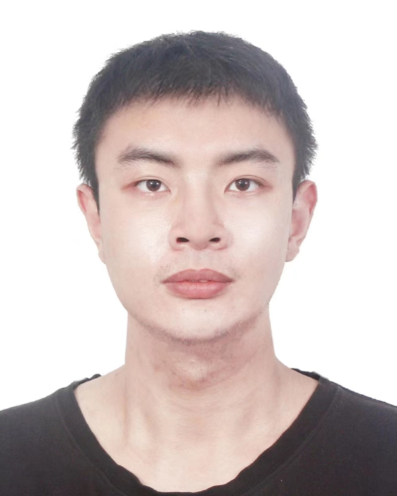

|
Huaien Zhang 张怀恩
Ph.D. Candidate
Department of Computing
The Hong Kong Polytecnic University
Hong Kong
E-mail: huaien.zhang[AT]connect.polyu.hk
[Twitter][Github]
|

|
Biography
Hello, I'm Huaien Zhang. I am a PhD candidate at The Hong Kong Polytechnic University, where I was advised by Prof. Yu Pei and Prof. Shin Hwei Tan. I also collaborate closely with Prof. Yuqun Zhang.
I am interested in intelligent software engineering and programming languages. My research focuses on applying techniques such as program analysis, fuzzing, and large language model to enhance the security and reliability of software systems.
Research Interests
- Program Analysis and Verification
- Automated Testing and Fuzzing
- SE4AI, AI4SE
Publications
("*" indicates the corresponding author.)
-
Xiaowen Zhang, Huaien Zhang*, and Shin Hwei Tan
Reusing Symbolic Code and Test for Redesigned Projects
Under Review
-
Haibo Wang, Zhuolin Xu, Huaien Zhang*, Nikolaos Tsantalis, and Shin Hwei Tan
An Empirical Study of Refactoring Engine Bugs
TOSEM 2025 (CCF-A): ACM Transactions on Software Engineering and Methodology
Under Revision
-
Huaien Zhang, Yu Pei, Shuyun Liang, Zezhong Xing, and Shin Hwei Tan
Characterizing and Detecting Program Representation Faults of Static Analysis Frameworks
ISSTA 2024 (CCF-A): The 33rd ACM International Symposium on Software Testing and Analysis
Directly accepted in the second round, accept rate: 16.6%
[PDF]
-
Huaien Zhang, Yu Pei, Shuyun Liang, and Shin Hwei Tan
Understanding and Detecting Annotation-Induced Faults of Static Analyzers
FSE 2024 (CCF-A): The 32st ACM International Conference on the Foundations of Software Engineering
Directly accepted without revision, accept rate: 11.6%
[PDF]
-
Huaien Zhang, Yu Pei, Junjie Chen, and Shin Hwei Tan
Statfier: Automated Testing of Static Analyzers via Semantic-preserving Program Transformations
ESEC/FSE 2023 (CCF-A): The 31st ACM Joint European Software Engineering Conference and Symposium on the Foundations of Software Engineering
[PDF]
-
Ying Li, Haibo Wang, Huaien Zhang, and Shin Hwei Tan
Classifying Code Comments via Pre-trained Programming Language Model
NLBSE 2023: IEEE/ACM 2nd International Workshop on Natural Language-Based Software Engineering
[PDF]
Experiences
Services
-
Organization Committee Member
-
Program Committee Member
-
ACM CCS 2025 AE, ICSE 2025 AE, ACM CCS 2024 AE, ICSME 2024 AE
-
Reviewer
-
External Reviewer
-
ICSE 2026, ICSE 2025, ICSE 2024, ISSTA 2024, FSE 2023, ASE 2023, ISSTA 2023, ICSE 2022, ASE 2022
Grants
-
ACM SIGSOFT CAPS Grant, Nov 2024
-
ACM SIGSOFT CAPS Grant, Jul 2024
-
The Hong Kong Polytechnic University Top Conference Travel Grant, Jul 2024
-
Postgraduate Scholarship, 2021 - 2025
Invited Talks
-
Dagstuhl Seminar: Effective Fault Detection for Static Analyzers via Autoamted Testing, 2025.06
-
Shandong University: Improving the Reliability of Program Analyzers via Automated Testing, 2024.11
Teaching
-
The Hong Kong Polytechnic University
- COMP3211 Software Engineering ➡️ (2021 - 2022 Semester, Autumn)
- COMP2421 Computer Organization ➡️ (2021 - 2022 Semester, Spring)
- COMP3211 Software Engineering ➡️ (2022 - 2023 Semester, Autumn)
- COMP2421 Computer Organization ➡️ (2022 - 2023 Semester, Spring)
-
Fudan University
- Introduction to Computer System ➡️ (2020 - 2021 Semester, Autumn)